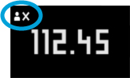

| 4/6 | The Smart Body Analyzer automatically recognizes you on the basis of your last known weight. If recognition fails, it displays the following symbol:  In such case, your weight reading will appear in the "Unknown measures" pane of the app. To ensure successful recognition in the future, please manually assign the reading to your profile by visiting the "Unknown measures" pane in the app's main menu. |